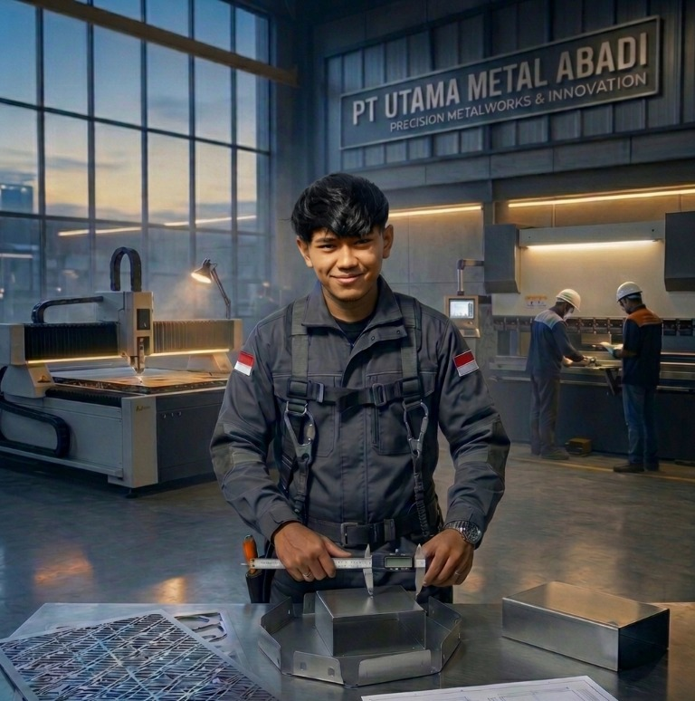

Spesialis dalam pemrosesan plat besi (mild steel) dan stainless steel. Memadukan kepemimpinan teknis, kepresisian pengukuran lapangan, dan efisiensi pabrikasi manufaktur modern.

Dedikasi lebih dari satu dekade dalam manufaktur, pengolahan material logam, dan kepemimpinan operasional proyek.
Praktisi manufaktur dan fabrikasi logam berpengalaman lebih dari 14 tahun dalam pemrosesan plat besi (mild steel) dan stainless steel. Memiliki keahlian strategis dalam manajemen operasional produksi, survei & pengukuran akurat di lapangan, perancangan gambar teknik, kontrol kualitas tingkat lanjut, serta kepemimpinan tim manufaktur berskala besar.
Pengukuran lokasi presisi tinggi tanpa deviasi.
Efisiensi potong/tekuk meminimalisir *defect* & waste.
"Menjamin ketepatan spesifikasi gambar kerja hingga hasil perakitan produk tiba di lokasi klien."
Penguasaan teknis dan manajemen yang komprehensif untuk mendukung standar fabrikasi tinggi.
Kepemimpinan tim operasional & koordinasi alur kerja pabrikasi efisien.
Pengoperasian presisi tinggi untuk pembentukan plat besi dan stainless.
Survei dan validasi dimensi riil di lokasi proyek tanpa kesalahan.
Penerjemahan & validasi teknik blueprint menjadi panduan produksi.
Spesialisasi pengolahan mild steel dan stainless steel mutakhir.
Estimasi bahan baku dan pengadaan barang pendukung operasional.
Inspeksi ketat kelayakan produk dan hasil perakitan sebelum serah terima.
Melatih kesabaran, keheningan, dan ketelitian fokus.
Eksplorasi perjalanan dan kecintaan pada dunia otomotif.
Membutuhkan manajer teknik berpengalaman atau konsultasi terkait fabrikasi besi dan stainless steel presisi tinggi? Silakan hubungi saya melalui telepon atau WhatsApp.